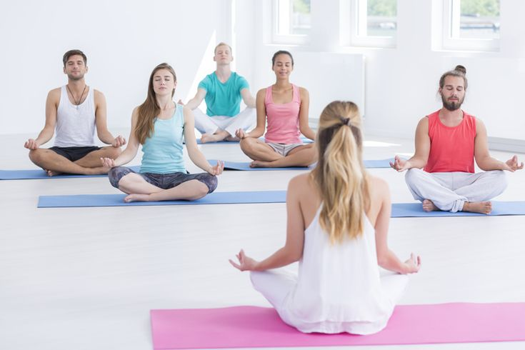
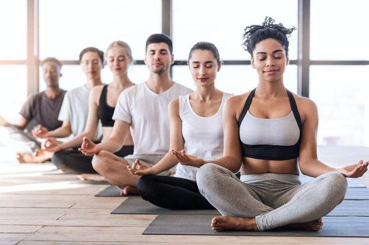
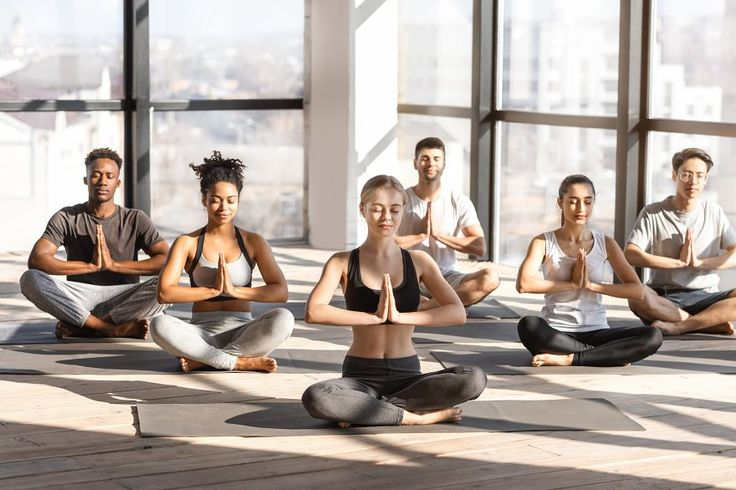
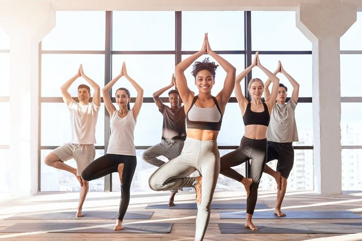
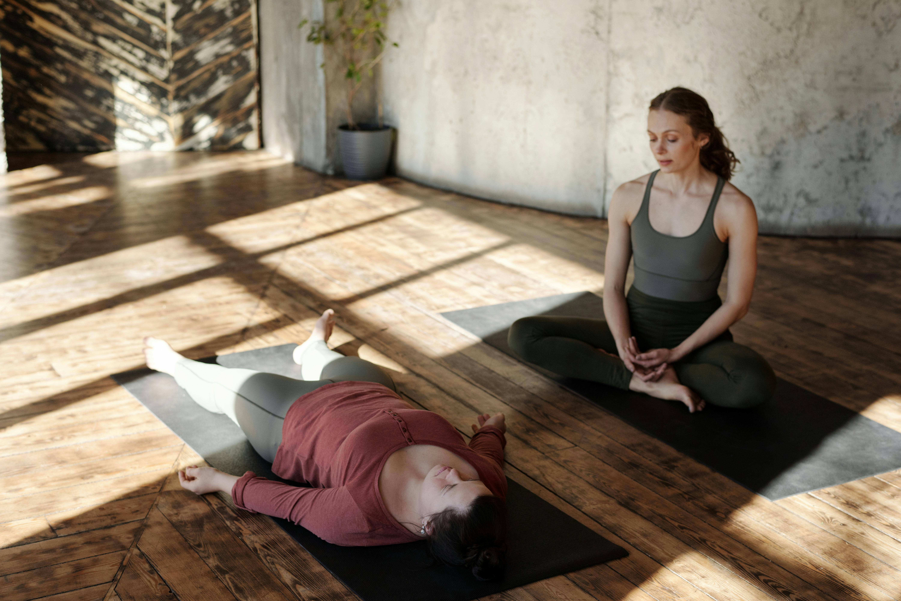
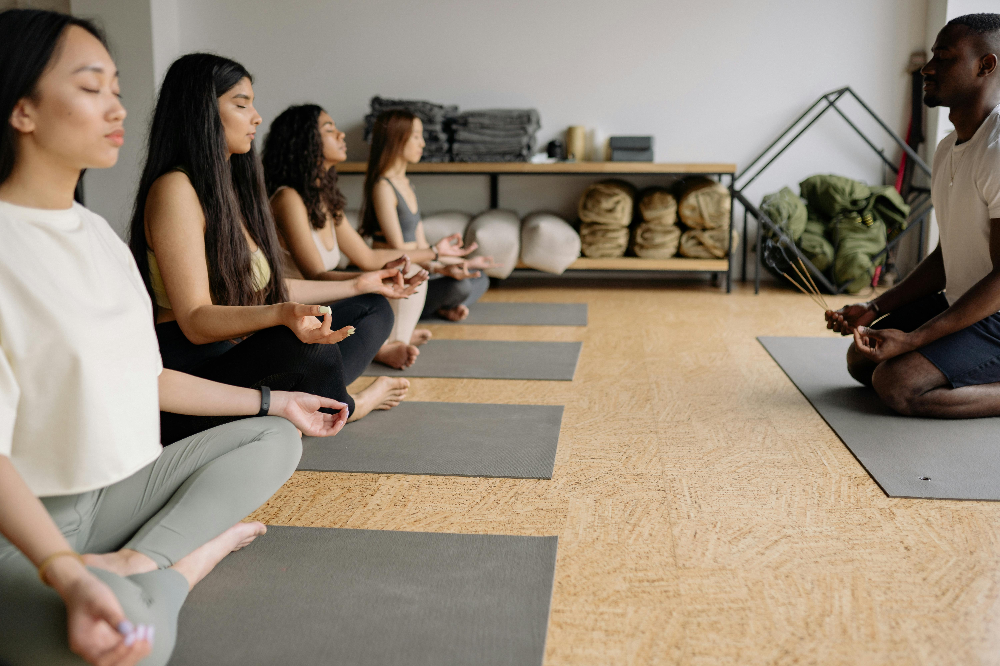
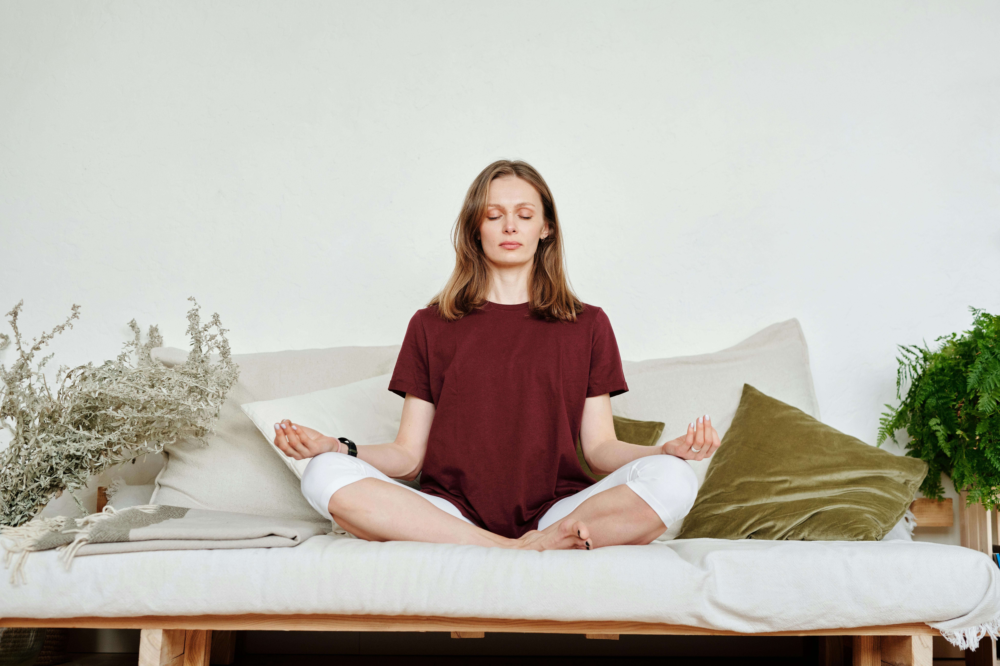
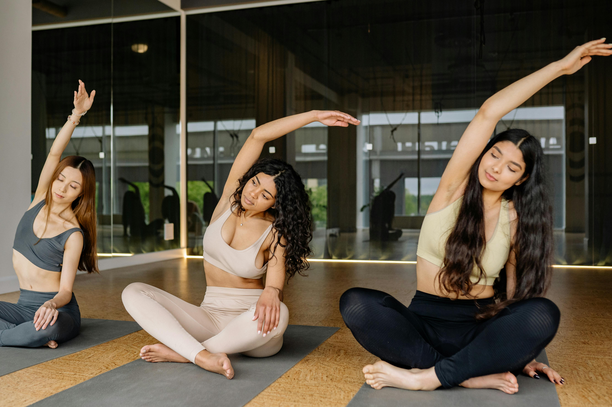
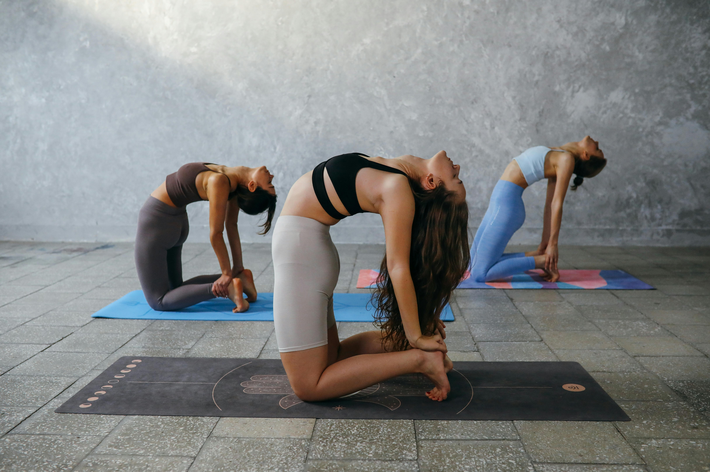

|

Yoga Novice Class This relaxing and friendly yoga class is designed especially for beginners. It focuses on gentle movements, basic poses, and calm breathing to help reduce stress and improve flexibility in a comfortable environment. The class is held every Monday, Tuesday, and Wednesday, making it easy to build a healthy and consistent yoga routine with guidance from a supportive instructor.
Time: 3:00 PM – 5:00 PM |

Daybreak Yoga This relaxing and friendly yoga class is designed especially for beginners. It focuses on gentle movements, basic poses, and calm breathing to help reduce stress and improve flexibility in a comfortable environment. The class is held every Monday, Tuesday, and Wednesday, making it easy to build a healthy and consistent yoga routine with guidance from a supportive instructor.
Time: 3:00 PM – 5:00 PM |

Yoga Balanced Class This relaxing and friendly yoga class is designed especially for beginners. It focuses on gentle movements, basic poses, and calm breathing to help reduce stress and improve flexibility in a comfortable environment. The class is held every Monday, Tuesday, and Wednesday, making it easy to build a healthy and consistent yoga routine with guidance from a supportive instructor.
Time:10:00 AM-12:00 AM |

Yoga Breathless Class This relaxing and friendly yoga class is designed especially for beginners. It focuses on gentle movements, basic poses, and calm breathing to help reduce stress and improve flexibility in a comfortable environment. The class is held every Monday, Tuesday, and Wednesday, making it easy to build a healthy and consistent yoga routine with guidance from a supportive instructor.
Time: 3:00 PM – 5:00 PM |
Mediation Classes
|

Recharge and Stress Relief This meditation class helps you relax your mind and reduce stress. It is suitable for beginners and uses simple breathing techniques.
Time: 3:00 PM – 5:00 PM |

Peaceful Meditation Class This meditation class helps you relax your mind and reduce stress. It is suitable for beginners and uses simple breathing techniques.
Time: 6:00 PM – 7:00 PM |

Recharge and Stress Relief This meditation class helps you relax your mind and reduce stress. It is suitable for beginners and uses simple breathing techniques.
Time: 3:00 PM – 5:00 PM |

Peaceful Meditation Class This meditation class helps you relax your mind and reduce stress. It is suitable for beginners and uses simple breathing techniques.
Time: 6:00 PM – 7:00 PM |
Private Yoga Session

Private Morning Yoga Session |

Private Relaxation Yoga Session |
|

Private Strength & Flexibility Yoga |

Private Evening Calm Yoga |
|
|